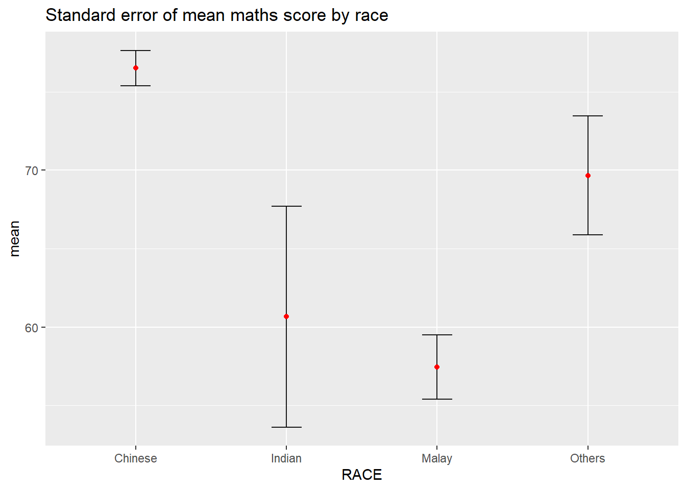
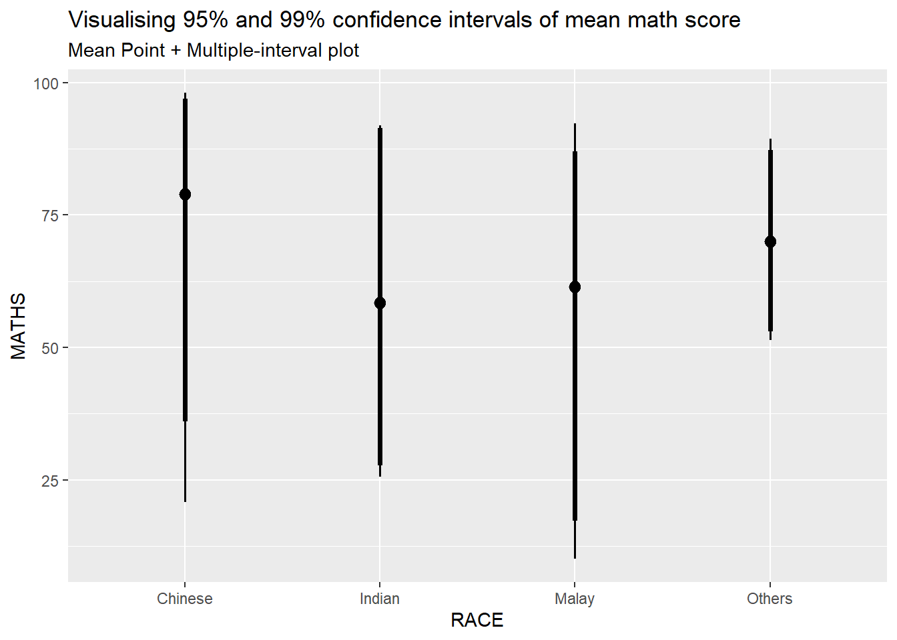
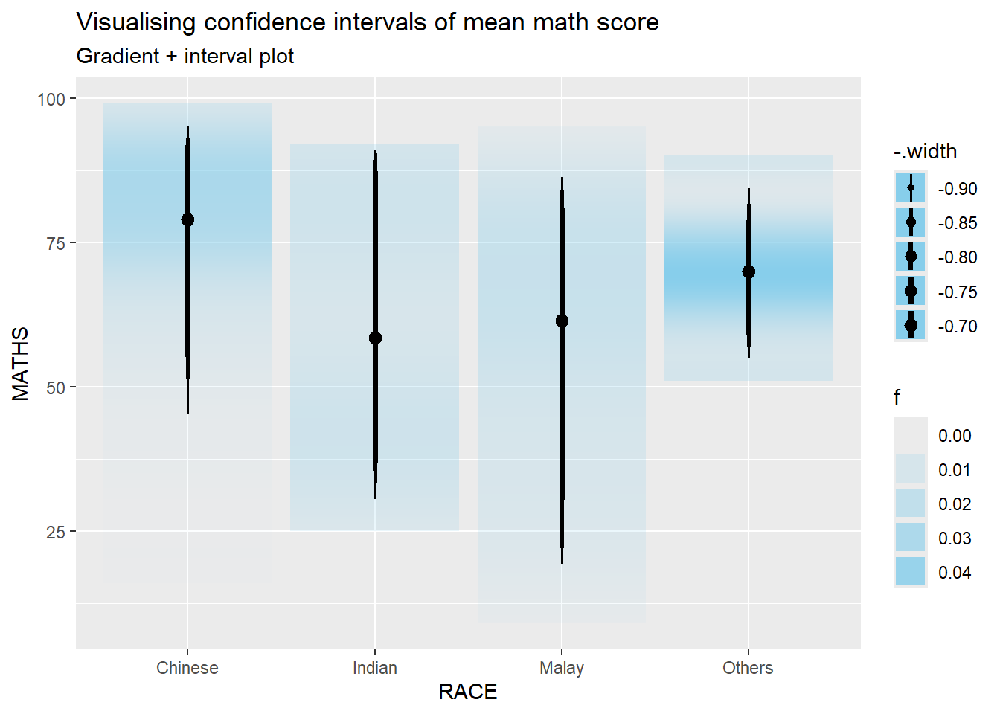
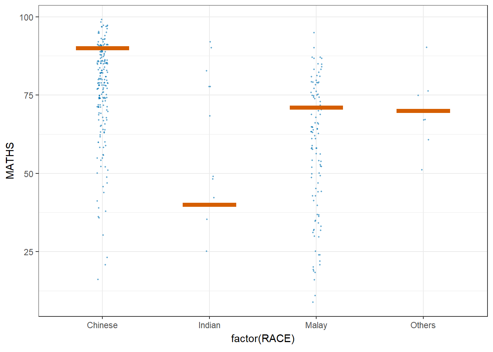

pacman::p_load(plotly, crosstalk, DT, ggdist, ggridges, colorspace, gganimate, tidyverse)Hands on Exercise 04c: Visualising Uncertainty
Overview
In this exercise, we will create statistical graphics for visualising uncertainty, which is relatively new in statistical graphics. We will learn how to:
- plot statistics error bars by using ggplot2;
- plot interactive error bars by combining ggplot2, plotly and DT;
- create advanced density and distribution plots by using ggdist; and
- create hypothetical outcome plots (HOPs) by using the ungeviz package.
Loading Data
We will be using the following R packages:
- plotly for creating interactive plots,
- crosstalk for for implementing cross-widget interactions (currently, linked brushing and filtering),
- DT for displaying interactive html tables,
- ggdist for visualising distributions and uncertainty,
- gganimate for creating animation plots, and
- tidyverse, a family of R packages for data science processes.
We will still be using Exam_data.csv.
exam <- read_csv("data/Exam_data.csv")Visualizing the uncertainty of point estimates: ggplot2 methods
A point estimate is a single number, such as a mean. Uncertainty, on the other hand, is expressed as standard error, confidence interval, or credible interval.
Important
Don’t confuse the uncertainty of a point estimate with the variation in the sample data.
In this section, we will plot error bars of maths scores by race by using data provided in the exam tibble data frame, but first, we must calculate the summary statistics.
my_sum <- exam %>%
group_by(RACE) %>%
summarise(
n=n(),
mean=mean(MATHS),
sd=sd(MATHS)
) %>%
mutate(se=sd/sqrt(n-1))
Things to learn from the code chunk above
group_by()of dplyr package is used to group the observation by RACE,summarise()is used to compute the count of observations, mean, standard deviationmutate()is used to derive standard error of Maths by RACE, and- the output is save as a tibble data frame called my_sum.
It is unaesthetically pleasing to just display the computed statistics, thus we display the my_sum tibble data frame in an html table format using the knitr package in tidyverse.
The table
| RACE | n | mean | sd | se |
|---|---|---|---|---|
| Chinese | 193 | 76.50777 | 15.69040 | 1.132357 |
| Indian | 12 | 60.66667 | 23.35237 | 7.041005 |
| Malay | 108 | 57.44444 | 21.13478 | 2.043177 |
| Others | 9 | 69.66667 | 10.72381 | 3.791438 |
The code
knitr::kable(my_sum, format = 'html')Plotting standard error bars of point estimates
Now we plot the standard error bars of mean maths score by race.
The plot

The code
ggplot(my_sum) +
geom_errorbar(
aes(x=RACE,
ymin=mean-se,
ymax=mean+se),
width=0.2,
colour="black",
alpha=0.9,
linewidth=0.5) +
geom_point(aes
(x=RACE,
y=mean),
color="red",
size = 1.5,
alpha=1) +
ggtitle("Standard error of mean maths score by race")
Things to learn from the code chunk above
- The error bars are computed by using the formula mean+/-se.
- For
geom_point(), it already plots aggregated datameanso there is no need to indicate stat=“identity”, which uses raw data without any transformations.
Plotting confidence interval of point estimates
Instead of plotting the standard error bar of point estimates, we can also plot the confidence intervals of mean maths score by race.
The plot

The code
ggplot(my_sum) +
geom_errorbar(
aes(x=reorder(RACE, -mean),
ymin=mean-1.96*se,
ymax=mean+1.96*se),
width=0.2,
colour="black",
alpha=0.9,
linewidth=0.5) +
geom_point(aes
(x=RACE,
y=mean),
color="red",
size = 1.5,
alpha=1) +
labs(x = "Maths score",
title = "95% confidence interval of mean maths score by race")
Things to learn from the code chunk above
- The confidence intervals are computed by using the formula mean+/-1.96*se.
- The error bars are sorted using the average maths scores with the function
reorder(RACE, -mean). labs()argument of ggplot2 is used to change the x-axis label.
Visualizing the uncertainty of point estimates with interactive error bars
We will now plot interactive error bars for the 99% confidence interval of mean maths score by race.
The plot
The code
ggplot(my_sum) +
geom_errorbar(
aes(x=reorder(RACE, -mean),
ymin=mean-1.96*se,
ymax=mean+1.96*se),
width=0.2,
colour="black",
alpha=0.9,
linewidth=0.5) +
geom_point(aes
(x=RACE,
y=mean),
color="red",
size = 1.5,
alpha=1) +
labs(x = "Maths score",
title = "95% confidence interval of mean maths score by race")Visualising Uncertainty: ggdist package
ggdist is an R package that provides a flexible set of ggplot2 geoms and stats designed especially for visualising distributions and uncertainty. It is designed for both frequentist and Bayesian uncertainty visualization, taking the view that uncertainty visualization can be unified through the perspective of distribution visualization.
For frequentist models, one visualises confidence distributions or bootstrap distributions (see vignette(“freq-uncertainty-vis”));
For Bayesian models, one visualises probability distributions (see the tidybayes package, which builds on top of ggdist).
Visualizing the uncertainty of point estimates: stat_pointinterval()
Here, we use stat_pointinterval() of ggdist to build a visual for displaying distribution of maths scores by race.
exam %>%
ggplot(aes(x = RACE,
y = MATHS)) +
stat_pointinterval() +
labs(
title = "Visualising confidence intervals of mean math score",
subtitle = "Mean Point + Multiple-interval plot")
This function comes with many arguments. In the following, we change the point estimate to median, using a quantile based interval of 95%. Another possible method is to use the highest density interval (hdi) which contain the most probable values of the distribution
exam %>%
ggplot(aes(x = RACE, y = MATHS)) +
stat_pointinterval(.width = 0.95,
.point = median,
.interval = qi) +
labs(
title = "Visualising confidence intervals of median math score",
subtitle = "Median Point + Multiple-interval plot")
Visualizing the uncertainty of point estimates: Two different CI’s on a single plot
We now show both the 95% and 99% confidence interval for the mean.
exam %>%
ggplot(aes(x = RACE,
y = MATHS)) +
stat_pointinterval(.width = c(0.95, 0.99),
show.legend = FALSE) +
labs(
title = "Visualising 95% and 99% confidence intervals of mean math score",
subtitle = "Mean Point + Multiple-interval plot")
As can be seen, the thicker line is shorter, representing the extent of the 95% CI, while the thinner line on the top and bottom of the thick line is extending the CI to 99%.
Visualizing the uncertainty of point estimates: stat_gradientinterval()
Here, we use stat_gradientinterval() of ggdist to build a visual for displaying distribution of maths scores by race.
exam %>%
ggplot(aes(x = RACE,
y = MATHS)) +
stat_gradientinterval(.width = c(0.70, 0.75, 0.80, 0.85, 0.90),
fill_type = "segments",
fill = "skyblue",
show.legend = TRUE
) +
labs(
title = "Visualising confidence intervals of mean math score",
subtitle = "Gradient + interval plot")
Here we can only perceive 3 different CI from the width due to the size of the plot and the limited changes it can display. We would do well to change the number of CI width arguments to better reflect the gradations.
The f values represent the probability density function, where a higher value (darker colour) indicates a region of higher probability density, meaning the estimated mean is more likely to be within that range, while a lower value (lighter colour) represents lower probability density, indicating greater uncertainty or less concentration of values in that region.
Visualising Uncertainty with Hypothetical Outcome Plots (HOPs)
Installing ungeviz package
devtools::install_github("wilkelab/ungeviz")Launch the application in R
library(ungeviz)Build the Hypothetical Outcome Plots (HOPs)
ggplot(data = exam,
(aes(x = factor(RACE),
y = MATHS))) +
geom_point(position = position_jitter(
height = 0.3,
width = 0.05),
size = 0.4,
color = "#0072B2",
alpha = 1/2) +
geom_hpline(data = sampler(25,
group = RACE),
height = 0.6,
color = "#D55E00") +
theme_bw() +
transition_states(.draw, 1, 3)
Here, position_jitter() is used to add slight randomness within those bounds to points, preventing overlap. transition_states() arguments are for the relative times between transition time and state time